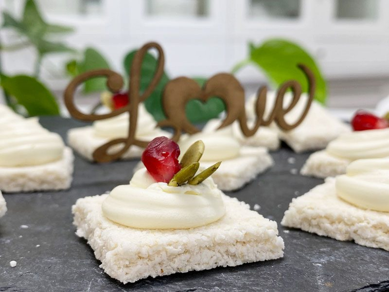
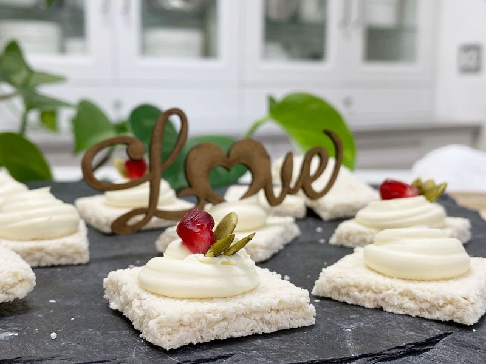

Buttery Coconut Crackers
As you gaze over the ingredient list, you will notice that I used ripe pears as the primary sweetener for this cracker. Oddly enough, the pear flavor didn’t shine through as I had imagined. Instead, it has a coconut flavor (that part didn’t surprise me), but it also ends with a hint of butter. Not what I was expecting, but none the less it turned out fantastic. That’s my story, and I am sticking to it.

Not only did the flavor of this cracker win me over, but so did the pale cream color. This color isn’t all that common in raw foods since a lot of recipe use nuts and seeds which come in fifty shades of brown. So I find great delight in creating light-colored foods.
Ooh, ooh, another thing that I love about this cracker is the crunch and stability. You wouldn’t think that we could achieve that with such few ingredients. Heck, this recipe is basically just two ingredients pears and dried coconut. Who would have thunk? So yea, this cracker has such a pleasant crunch that it will block out any outside noise in your head. I know you know what I mean. With that crunch comes a firmness that can stand up to any spread or topping. Just make sure that you don’t spread the batter too thin when rolling it out.
To Skin a Pear or Not to Skin a Pear
For nutritional reasons, we’re often advised to consume the skins of fruits. Studies have shown that the skin of pears contains at least three to four times as many phenolic phytonutrients as the flesh. These phytonutrients include antioxidant, anti-inflammatory flavonoids, and potentially anti-cancer phytonutrients like cinnamic acids. The skin of the pear has also been shown to contain about half of the pear’s total dietary fiber. (1)
BUT I have to admit that I removed the skins from my pears when making these crackers. I think I was tired because I did it without awareness. As if I was on autopilot or something. In the end, I was glad aesthetic wise because the crackers turned out with a beautiful soft white color. If the pears are organic and you don’t care about the coloring, go ahead and keep the skins on; however, if they are not organically grown, you will definitely want to remove the skins.
Which type of Pear should I use?
A pear is a pear, right? Well, yes, but no. There are many different varieties of pears which can affect the flavor of the cracker. I used organic Bosc pears, which we grow here in our orchard. But feel free to use whatever is available to you. Just aim for organic and ripe ones! Here is an incomplete list of pears… pay attention to the flavor descriptions.
- Bartlett: Their skins are yellow/green and speckled. When mature but not fully ripe, Bartlett pears are crunchy, tart, and slightly gritty, but when fully ripe, they develop a juicy, smooth, buttery texture with a sweet flavor.
- Bosc: This pear ranges in color from golden brown to dark tan with a light bronze-russet. The dense, crunchy flesh of the Bosc pear has a sweet flavor with notes of honey and spice.
- Comice: Comice pears have a distinctly squat shape with a large bulbous bottom and a short, well-defined neck connecting to a thick brown-green stem. The skin is soft, very fragile, and bruises easily. The flesh is ivory to off-white and is silky, creamy, moist, and fine-grained. When ripe, they have buttery and very juicy texture, are highly aromatic and have an exceptionally sweet, mellow, and earthy flavor.
- Concorde: They are small to medium in size with a large, round base that tapers into a long narrow, and pointed neck. The smooth skin is green-yellow with patches of red blushing and a golden-brown russeting connecting to a brown stem. The white to ivory flesh is dense, firm, and moist. When ripe, Concorde pears may still have a somewhat firm consistency and are aromatic, juicy, and sweet with floral notes and hints of vanilla.
- Red & Green Anjou: these pears are short, squat, and egg-shaped with a broad base that gradually tapers to a rounded top with a thick, dark-brown stem. The smooth, firm skin can range in color from deep red, maroon, rust-colored, to a lighter, crimson red. The flesh is white to cream-colored, dense, and buttery with a slightly gritty texture. When ripe, they are juicy and soft with subtle, sweet flavors and mild notes of lemon and lime.

Are you intrigued yet? Well, why not?! Oh, you are? Sorry, I misunderstood. Haha, I crack myself up. You know, growing up, I was an only child. I won’t fib, I daydreamed of having a sibling, but that didn’t happen till I turned sixteen years old, which is when my precious sister, Neisha, was adopted. But as an only child, I learned how to entertain myself. I had the best audience at my disposal; me, myself, and I. They were my groupies and followed me everywhere! haha
Anyway, I think that it’s time to release you to the kitchen. There are dishes to dirty and creations to make! Please leave me a comment below. I love hearing from you. Have a blessed day, amie sue
 Ingredients:
Ingredients:
yields 36 crackers (1- 1 /2″ square)
- 2 cups (375 g) diced fresh pears
- 1 Tbsp (15 g) maple syrup, optional
- 1 /4 tsp (2 g) Himalayan pink salt
- 3 cups (337 g) macaroon finely shredded coconut
Preparation:
- Process the pears, sweetener (if used), and salt in a food processor, fitted with the “S” blade, until creamy.
- To avoid brown flakes in your crackers, I recommend removing the skins from the pears. (if organic)
- Add shredded coconut and process till mixed.
- Line the dehydrator tray with a non-stick teflex sheet.
- Spread the batter into a large square.
- Make sure that you spread it evenly, so it dries evenly.
- Score the crackers into desired shapes and sizes. You can use a pizza cutter or a long metal ruler to create the score marks.
- Dehydrate at 145 degrees (F) for 1 hour, then reduce to 115 degrees (F) and continue drying for up to 24 hours until dry and crispy.
- Snap apart and let cool before storing in an airtight bag/container.
- They should last several weeks in the pantry and in the freezer for 2-3 months. If they start to soften due to humidity, throw them back in the dehydrator to crisp up.
- For Friday night excitement (lol), I place a teaspoon of softened coconut butter on the crackers. Delicious!
© AmieSue.com